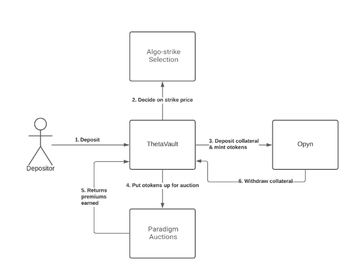

Ribbon Finance 深度解析：Theta Vaults 架构
Ribbon Finance 深度解析：Theta Vaults 架构
引言
Ribbon Finance 是一个建立在以太坊上的去中心化金融（DeFi）协议，旨在通过结构化的产品为用户提供更高的收益。其核心产品之一是 Theta Vaults，这是一种自动化的欧式期权销售策略。用户可以简单地存入资产，Vault 将自动运行特定的期权策略，通过卖出期权并收取溢价来赚取收益。
本文将深入探讨 Ribbon 的 Theta Vaults 架构，包括其工作原理、期权策略、拍卖机制、风险概况、费用结构，以及整体的运作流程。
一、Theta Vault 简介
1. 什么是 Theta Vault？
Theta Vault 是一种 自动化的欧式期权销售策略，旨在通过每周卖出货币期权并收取溢价来赚取收益。Vault 的名称源于将资产存入保险库（Vault）并从中获得收益的概念。
2. 核心特点
- 自动化策略：用户只需存款，Vault 将自动运行特定的期权策略，无需用户手动操作。
- 成本分摊：Vault 将所有存款人的 Gas 成本分摊，降低了个人参与的成本。
- 暂停与恢复功能：用户可以选择何时参与或暂停每周的策略，灵活管理资产。
3. Vault 类型
当前主要有两种 Vault 类型：
- Covered Call Selling（备兑看涨期权销售）：Vault 对所持有的资产发行 虚值（OTM） 的看涨期权。
- Put Selling（卖出看跌期权）：Vault 对存入的抵押品发行 虚值（OTM） 的看跌期权。
二、行权价选择与到期日
1. 行权价的选择
- 算法决定：行权价在期权拍卖前的最后一分钟由算法选择，目标是固定在 10 Delta，即期权的 Delta 值为 10%。
- 关键因素：波动性是行权价选择的关键因素，而非现货价格。
- 模型基础：基于 Black-Scholes 模型，并进行了适当的调整。
2. 波动率的获取
- 历史波动率：来自 Uniswap 等去中心化交易所的数据。
- 隐含波动率：对于 ETH/BTC 等主要资产，使用 Deribit 的 10 Delta 隐含波动率。对于其他资产，使用自定义算法。
3. 到期日
- 每周到期：Vault 出售 每周到期 的期权，能够更频繁地调整策略和复利收益。
- 欧式期权：期权只能在到期时行权，增加了策略的可控性。
三、Options 架构
1. Opyn oToken
- 定义：oToken 是 Opyn 协议发行的 ERC-20 标准的期权代币。
- 特点：每个 oToken 代表一个特定执行价和到期日的期权合约。
- 权利：持有 oToken 的用户有权在到期时以执行价格兑换一定数量的标的资产。
2. Vault 如何运行期权策略
-
铸造并卖出期权：
- Vault 使用用户存入的资金作为抵押品，锁定在 Opyn 协议中。
- 铸造相应数量的 oToken（即卖出期权）。
- 将 oToken 在市场上出售，收取期权溢价。
-
抵押品管理：
- 抵押品在期权到期前被锁定，确保有足够的资产应对潜在的行权。
- 到期后，根据期权是否被行权，解锁相应的抵押品。
3. 期权的结算
- 现金结算：Opyn 期权是现金结算的，如果期权在到期时 价内（ITM），Vault 将根据行权价与市场价的差额，以现金形式支付给期权持有人。
- 自动行权：ITM 的期权在到期时会被自动行权，简化了结算过程。
四、拍卖机制
1. Paradigm 拍卖
- 转变原因：Ribbon 最初使用 Gnosis 进行公开拍卖，但由于其结构性限制（如结算价格偏低），转而与 Paradigm 合作。
- 拍卖特点：
- 盲拍：投标人无法看到其他人的报价，减少了博弈行为。
- 全有或全无：有助于创造更激烈的价格竞争，提高溢价收入。
2. 拍卖流程
- 拍卖前准备：
- Vault 铸造 oToken，准备好待售的期权合约。
- 投标过程：
- 注册用户可以参与拍卖，提交购买 oToken 的报价。
- 结算：
- 拍卖结束后，根据报价和数量，确定最终的成交价格和数量。
- 未售出的 oToken 将被销毁，抵押品解锁。
3. 拍卖费用
- 费用结构：Ribbon 完成的名义交易量的 4 个基点（bps） 作为费用支付给 Paradigm。
五、风险概况
1. 主要风险
- 期权被行权风险：
- 如果 Vault 出售的看涨期权在到期时 价内（ITM），意味着标的资产价格高于执行价，Vault 需要支付差额。
- 对于看跌期权，如果标的资产价格低于执行价，也会面临损失。
2. 风险管理
- 虚值期权：Vault 出售 OTM 期权，降低了被行权的概率。
- 定期调整：每周调整策略，根据市场变化重新设定行权价和到期日。
- 多样化：提供不同类型的 Vault，满足不同风险偏好的用户需求。
六、费用结构
1. 管理费
- 年化 2% 的管理费：基于 Vault 管理的总资产（AUM），按周计算并收取。
2. 绩效费
- 10% 的绩效费：基于每周策略所赚取的期权溢价收入，按周计算并收取。
3. 收费原则
- 有利可图时收费：只有当每周策略盈利时，才收取绩效费和管理费。
- 亏损时不收费：如果策略无利可图，则不收取任何费用。
4. 费用计算示例
-
假设：
- Vault 管理的资产：100 ETH
- 本周赚取的期权溢价：1 ETH
-
管理费：
- 周管理费 = ( \frac{2%}{52} \times 100 ) ETH ≈ 0.0385 ETH
-
绩效费：
- 绩效费 = 10% × 1 ETH = 0.1 ETH
七、Vault 整体流程
流程图

-
用户存款
- 用户将 100 ETH 存入 T-ETH-C（ETH 看涨期权） Vault。
-
策略启动（周五 8 AM UTC）
- Vault 关闭前一周的策略。
- 使用存款铸造 100 个 oToken，对应的 100 ETH 被锁定在 Opyn 协议中一周。
-
拍卖期权
- Vault 将 100 个 oToken 在 Paradigm 平台上进行拍卖。
- 投标人以 ETH 支付期权溢价，假设共收取 1 ETH 的溢价。
- 未售出的 oToken 将被销毁，对应的抵押品解锁。
-
期权到期（下周五 8 AM UTC）
- 情况一：期权 OTM 到期
- 期权未被行权，Vault 收回原始的 100 ETH 抵押品。
- 情况二：期权 ITM 到期
- Vault 需要支付差额，可能收回少于 100 ETH 的抵押品。
- 情况一：期权 OTM 到期
-
策略重复
- 假设期权 OTM 到期，Vault 现在持有 101 ETH（100 ETH 原始资产 + 1 ETH 溢价）。
- Vault 重复步骤 2，以 101 ETH 继续下一周的策略。
八、数学模型与收益计算
1. 期权溢价的计算
-
基于 Black-Scholes 模型：
-
期权溢价 ( C ) 计算公式：
$$
C = S_0 N(d_1) - Ke^{-rT} N(d_2)
$$其中：
- ( S_0 )：当前标的资产价格
- ( K )：行权价
- ( T )：到期时间（以年计）
- ( r )：无风险利率
- ( N(d) )：标准正态分布函数
-
-
Delta 为 10%：
- ( \Delta = N(d_1) )，设置 ( \Delta = 0.1 )，反解行权价 ( K )。
2. 收益计算
-
总收益：
$$
\text{总收益} = \text{期权溢价} - \text{可能的行权损失} - \text{费用}
$$ -
每周复利：
- 由于策略是每周执行，收益可以进行复利计算，提高年化收益率。
3. 风险敞口
- 最大损失：
- 对于看涨期权，最大损失为标的资产价格无限上涨时的损失，但由于出售的是 OTM 期权，且有抵押品限制，实际风险可控。
- 盈亏平衡点：
- 期权的行权价 + 收取的期权溢价。
九、优势与特点
- 自动化策略：用户无需手动管理期权交易，降低了参与门槛。
- 分摊成本：Gas 费用在所有用户之间分摊，降低了个人成本。
- 灵活性：用户可以随时选择参与或退出策略。
- 收益潜力：通过每周复利和策略调整，有机会获得高于市场平均水平的收益。
十、风险与注意事项
- 市场风险：标的资产价格剧烈波动可能导致期权被行权，导致损失。
- 智能合约风险：涉及多个合约交互，可能存在技术漏洞。
- 流动性风险：在极端市场情况下，期权的流动性可能不足，影响策略执行。
结论
Ribbon Finance 的 Theta Vaults 为用户提供了一种自动化、高收益潜力的投资工具。通过结构化的期权策略、专业的拍卖机制和风险管理，用户可以在降低操作复杂度的同时，获得稳定的收益。然而，任何投资都伴随着风险，建议用户在参与之前，充分了解策略的原理和潜在风险，谨慎决策。
参考资料
Ribbon Finance 深度解析：Theta Vaults 架构
http://navafee.github.io./ribbon/